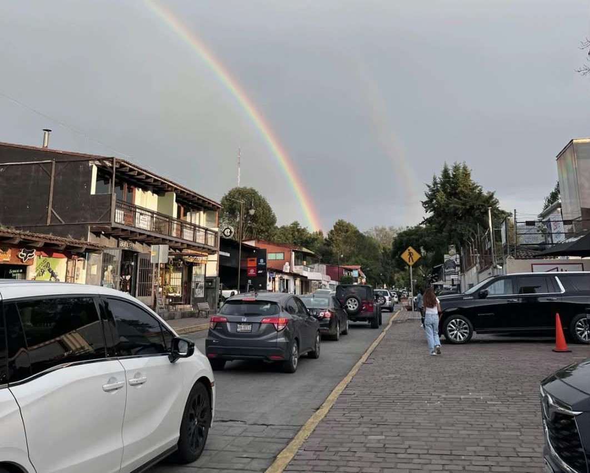
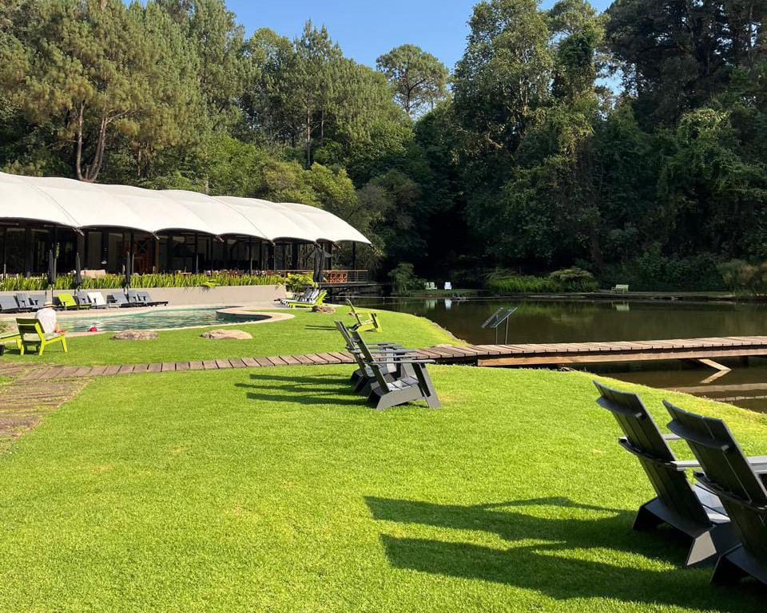
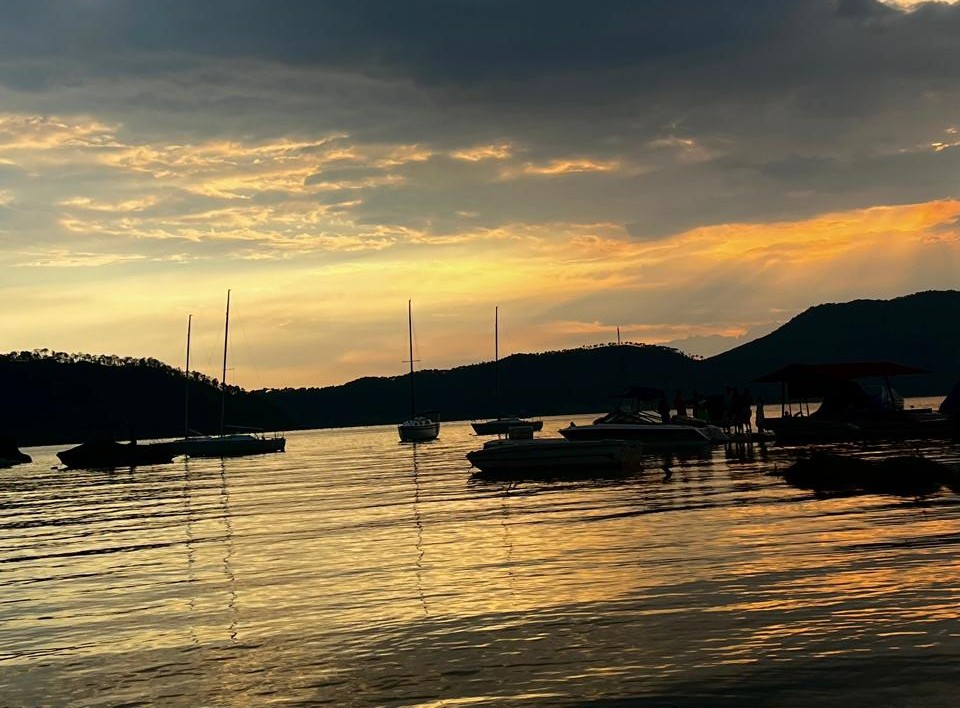
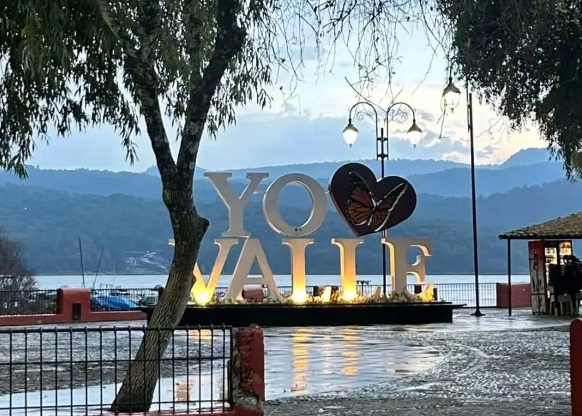

Centro de Valle de Bravo
Ubicada en Calle Independencia No.01 en el Centro de Valle de Bravo.
Es uno de los lugares más representativos del municipio. Se caracteriza por sus calles empedradas, casas con arquitectura tradicional, restaurantes, tiendas y edificios históricos. Es un espacio ideal para conocer la cultura, disfrutar de la gastronomía y recorrer sus principales atractivos turísticos.

Avandaro
Zona comercial de Avandaro,cerca de la Avenida del Carmen.
Es una zona turística muy visitada por sus restaurantes, cafeterías, tiendas y hoteles. Cuenta con un ambiente tranquilo y rodeado de naturaleza. También es conocido por sus actividades recreativas, paisajes y espacios para disfrutar en familia.

Rodavento
Se Ubica en la Carretera Valle de Bravo-Los Saucos.
Es un lugar turístico rodeado de bosques y naturaleza, ideal para descansar y disfrutar de actividades al aire libre. Cuenta con instalaciones para hospedarse, áreas de descanso y espacios recreativos. Es reconocido por combinar comodidad, tranquilidad y contacto con el medio ambiente.

Villa de Colorines
Campo de Veisbol Ubicada por la Calle San Francisco
Es un espacio deportivo donde se pueden realizar actividades físicas y practicar béisbol. Es importante para fomentar la convivencia, el trabajo en equipo y la actividad deportiva entre los habitantes de la comunidad. También puede ser utilizado para encuentros y eventos deportivos.

Laguna
Ubicada por la Estrella.
La laguna de Valle de Bravo es uno de los principales atractivos naturales de la región. Es conocida por sus hermosos paisajes y por ofrecer actividades acuáticas como paseos en lancha, kayak y vela. Además, sus atardeceres crean vistas espectaculares que atraen a numerosos visitantes.
Letrero
Ubicada por el Banco del Bienestar.
Es un atractivo punto fotográfico que representa el cariño y orgullo por Valle de Bravo. Se encuentra en una zona donde se pueden apreciar los paisajes de la laguna y las montañas. Es un lugar visitado por turistas y habitantes que buscan tomarse fotografías y conservar un recuerdo de su visita.